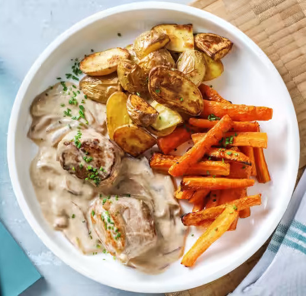

Home
Medallions of pork with honey carrots

Description
Down-to-earth German cuisine with fresh and seasonal ingredients
Ingredients
- 250g Pork tenderloin
- 500g Potatoes
- 6 Carrots
- 1 Red onion
- 10g Chives
- 150g Cooking cream
- 4g Beef broth
- 1 Teaspoon honey
- 3 Tablespoons oil
- 50ml Water
- Salt & Pepper to taste
Steps
-
Preheat the oven to 200 °C convection oven. Halve or quarter the potatoes. Spread potatoes on a baking tray covered with baking paper (leave some space for the carrots), mix with 1 tbsp. oil and season with salt and pepper.
-
Cut carrots in half crosswise and then into quarters lengthwise. In a large bowl, mix carrot sticks with 1 tablespoon oil, 1 teaspoon honey, and pepper and salt. Place carrot sticks on baking sheet next to potato wedges. Bake vegetables in preheated oven for approx. 25 min. until soft and lightly browned.
-
Halve the onion and cut into fine strips. Cut chives into fine rolls. In a tall mixing bowl, mix cooking cream with 50 ml water and beef broth. Cut pork tenderloins in half to make 2 medallions per person.
-
In a large frying pan, heat 1 tbsp. oil and sear medallions for 1 - 2 min. on each cut side. Remove medallions from pan and reduce heat. Add onion strips to pan without adding more fat and sauté for 2 min. Deglaze pan contents with prepared cream mixture. Reduce heat until sauce is only simmering very gently.
-
Add medallions to sauce and simmer for 6 - 7 min. until meat is only slightly pink inside. Turn meat once in between. Season sauce with salt and pepper. Tip: If you prefer the meat well-done, add a few tablespoons of water to the sauce and let it simmer with the medallions for another 2 minutes.
-
Arrange potato wedges and honey carrots on plates. Arrange pork medallions with sauce next to it. Top everything with chive rolls and enjoy. Enjoy your meal!